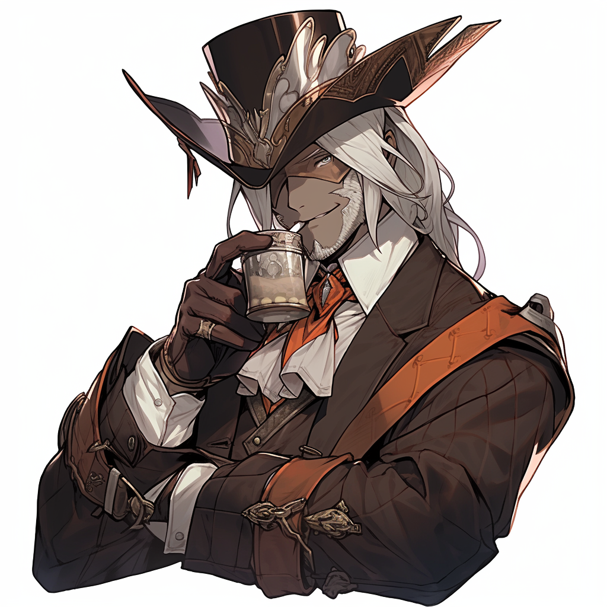

Weird Frontiers
Character Profile: Bobby

Basic Information
System
Dungeon Crawl Classics RPG (modified)
Campaign
None (custom one-shot)
Occupation
Distiller
Class
Gambler
Path
Damned
Lucky Sign
Speed of the Cobra
Stats
The stats for a character in Weird Frontiers represent their physical and mental capabilities. They are used
to
determine how well the character can perform in a given scenario. Here are the stats for Bobby:
Abilities
-
Strength
9
-
Agility
12
-
Stamina
14
-
Personality
13
-
Intelligence
12
-
Luck
15
Saving Throws
-
Reflex
0
-
Fortitude
1
-
Will
1
Backstory
Gambler
There's a certain poetry in the flip of a card, a romance between the skill of the gambler and the
flirtations of Lady Luck. Know when to hold 'em. Know when to fold 'em. Simple rules for the
discriminating gambler for a simpler time. Nowadays that courtship with the Lady is far more literal.
Bobby has always been lucky and had a keen mind for probability and chance, but since the Seven Days of
Night, luck is like a fountain that he can dip his cup into. He can drink deeply from that cup or he
can pass it around and share his luck. The simple cards tricks he learned to limber his fingers have
been charged with power as well, providing some defense for the times when the Lady is feeling downright
ornery and spurns his advances.
Proficiencies & Languages
Weapons
Copper Pipe
As a distiller, Bobby has learned to effectively use a copper pipe as a weapon in a fight.
Equipment
A Bottle of Shine
Bobby is never without a bottle of shine. Otherwise, what sort of distiller would he be?
Lantern
Bobby has a lantern that comes in handy when venturing to and from hidden distilleries.
Languages and Communication
Common
Common is a language spoken by most inhabitants of Weird Frontiers.
Other Characters
Check out some of my other TRPG characters!